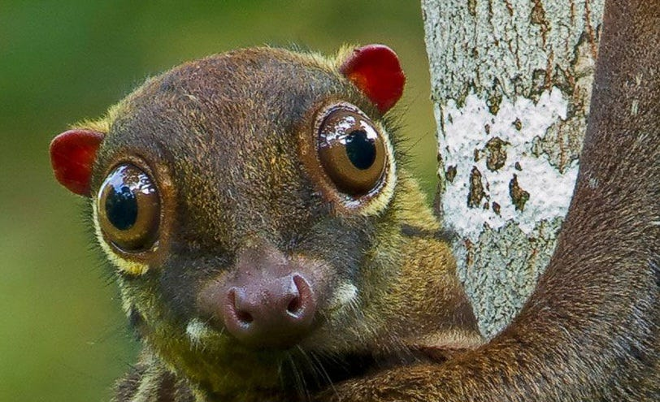
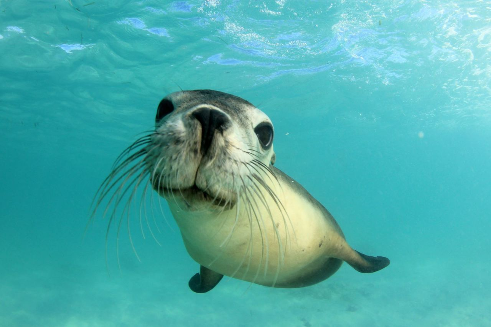
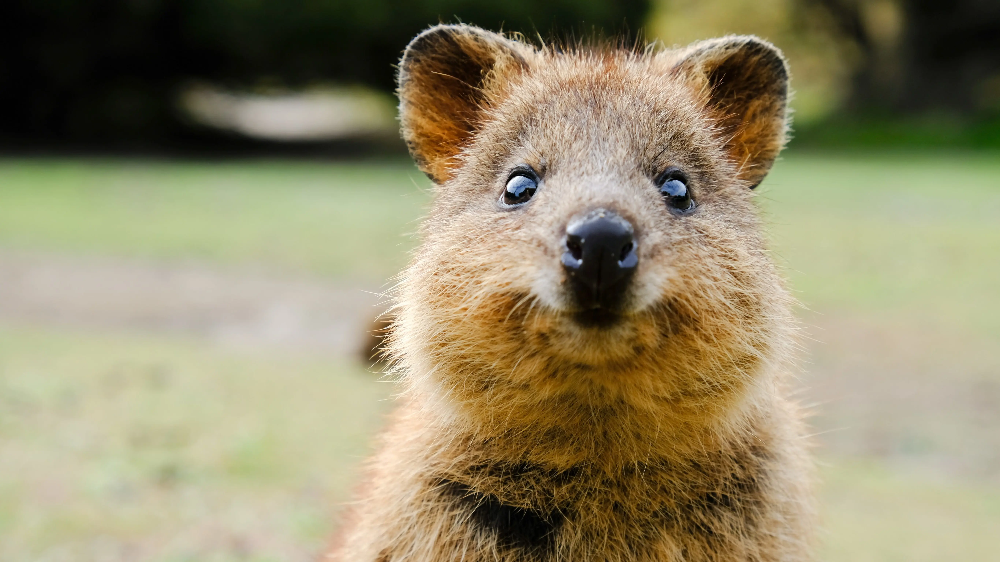
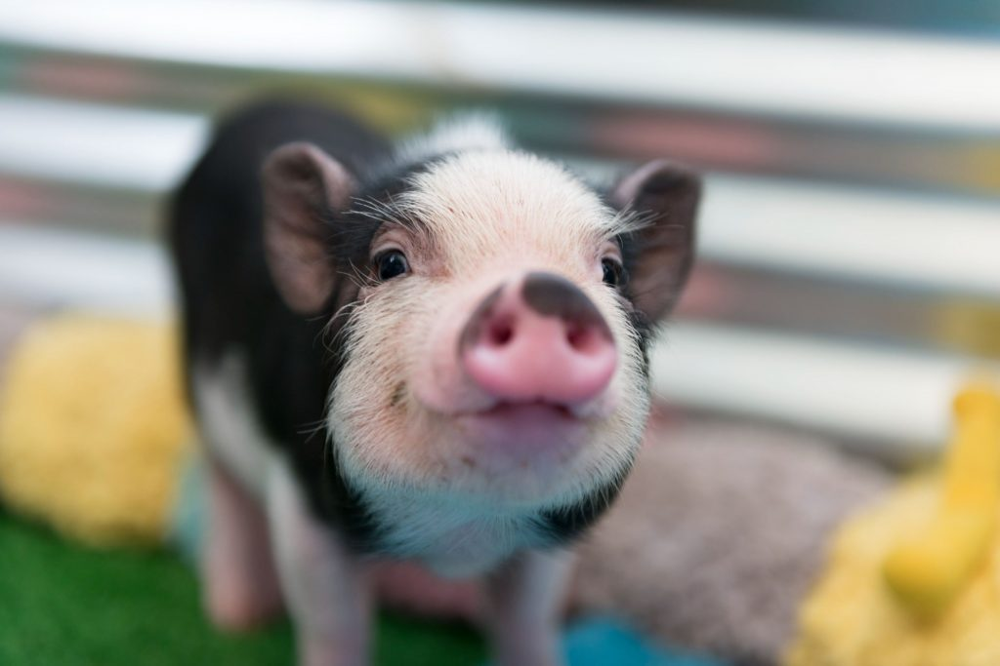
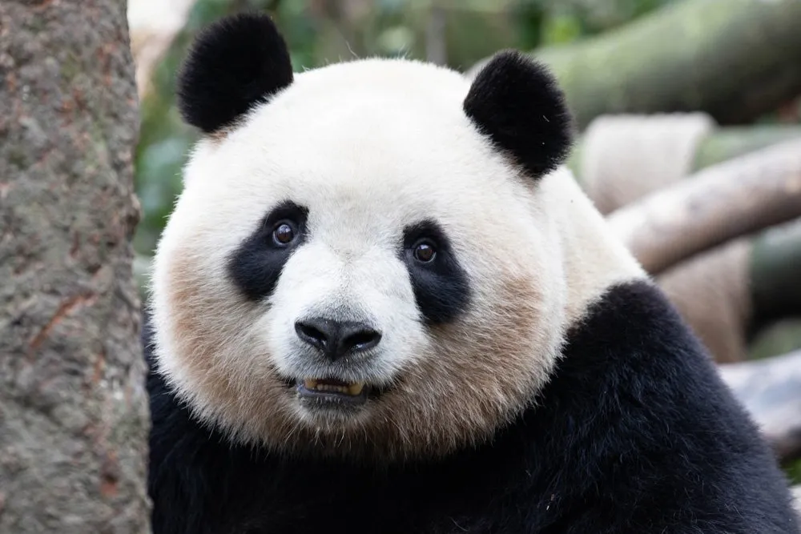
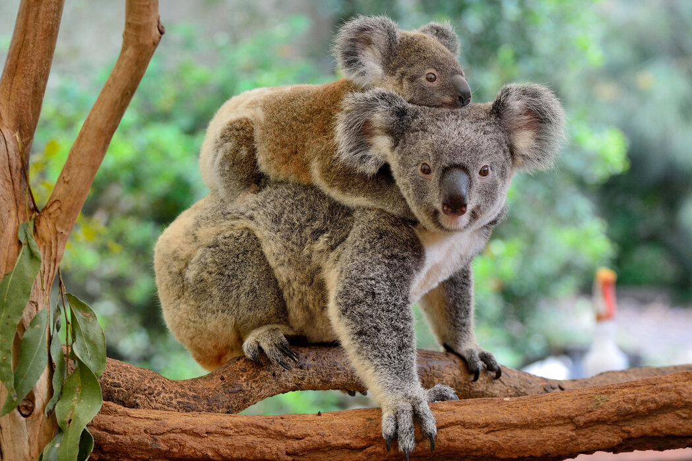
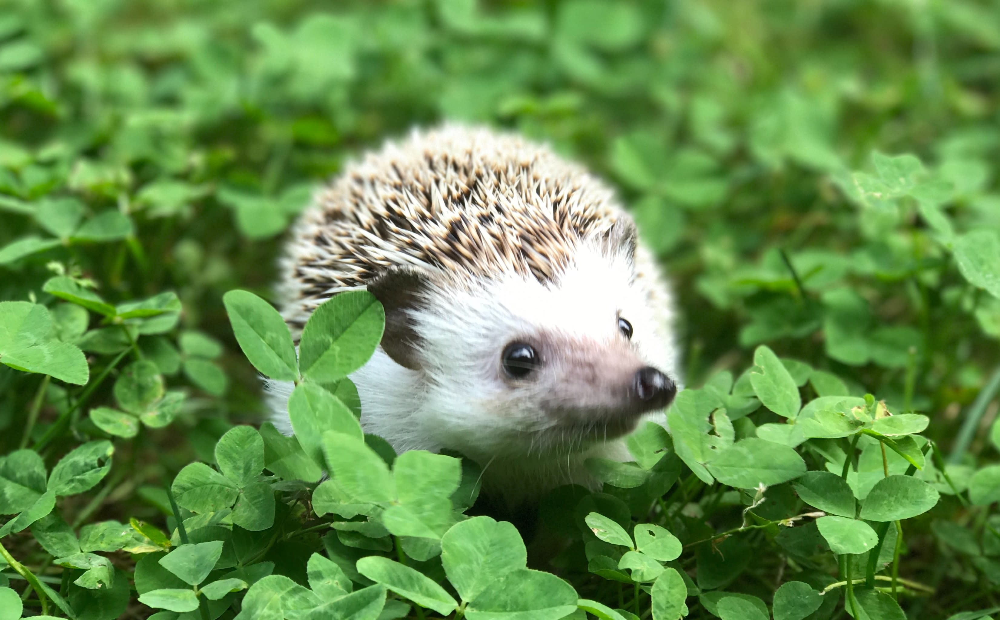
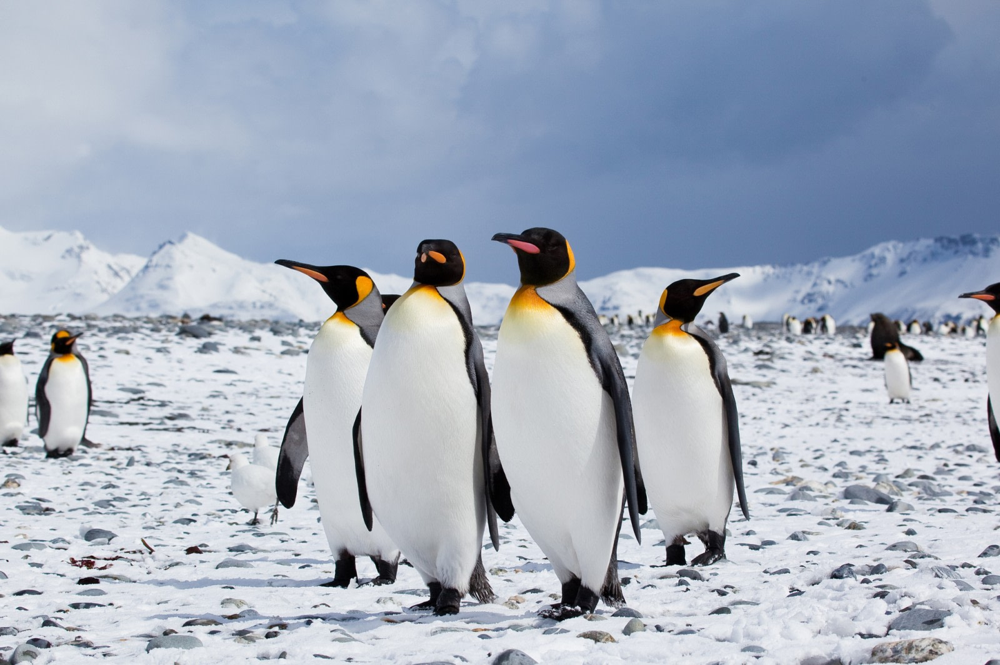
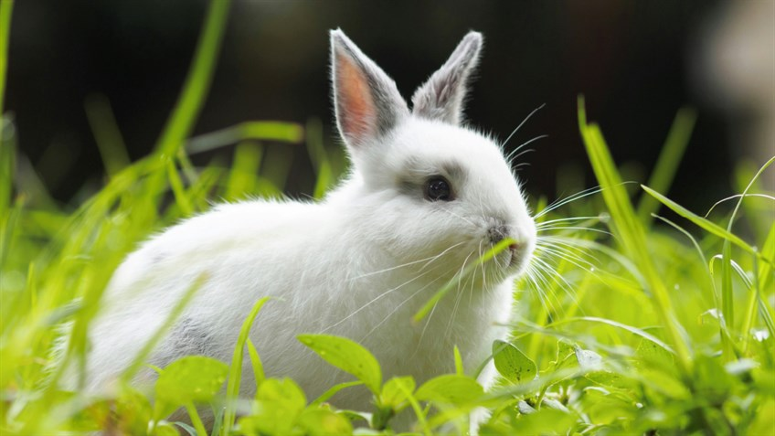
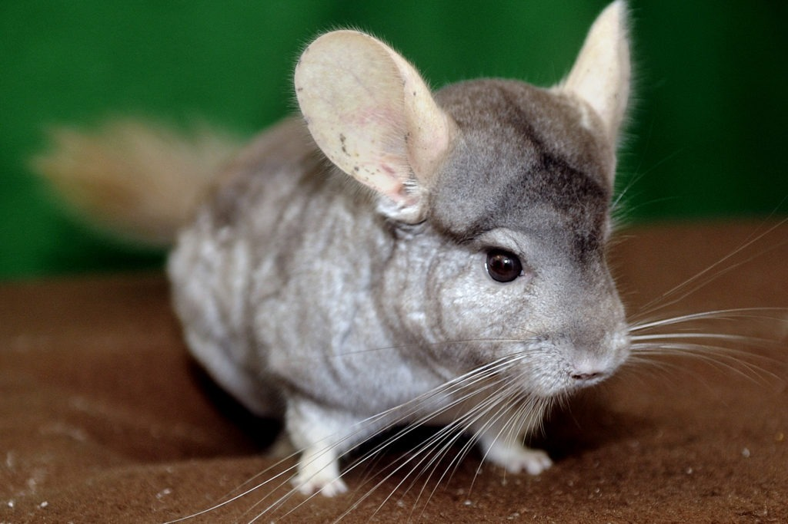

The 18 Cutest Animals in the World That Will Melt Your Heart
Humans have a natural tendency to find certain animals irresistibly cute, and it's no surprise our biology is wired to react to certain characteristics. The concept of cuteness is rooted in our evolutionary biology, and understanding why certain animals evoke these feelings helps us appreciate them even more.
What Makes “Cute Animals”?
Central to our perception of cuteness is the concept of neoteny, which involves the retention of
juvenile features into adulthood. These traits often include large eyes, small noses, round faces, and
small bodies. This phenomenon is closely related to the ‘baby schema’ theory, first proposed by
ethologist Konrad Lorenz.
Lorenz’s theory suggests that baby-like characteristics trigger nurturing responses in adults vital for
the survival of offspring. When we observe animals exhibiting these traits, our brains release dopamine,
a neurotransmitter that evokes feelings of pleasure and caretaking.
You may notice that many animals we consider “cute” are often furry. Studies have shown that petting a
furry animal increases serotonin and dopamine levels, which contribute to happiness and well-being. This
enhances the perception of cuteness. Culturally, furry animals are often portrayed as friendly,
approachable, and affectionate, reinforcing our natural inclinations to adore them.
Lastly, small size is another feature that enhances an animal's cuteness. Smaller animals are generally
perceived as harmless and playful, evoking a desire to protect them rather than defend oneself from
them. It’s no wonder these critters have such a hold on our hearts!
Let’s take a closer look at some of the cutest animals in the world that continue to charm us with their
endearing qualities.
1. Flying Lemur
Native to Southeast Asia
The flying lemur, also known as the colugo, is not a true lemur but is famous for its extraordinary
gliding ability. It has a large membrane stretching between its limbs that allows it to glide across the
forest. With a gentle face and big eyes, the flying lemur is both elusive and adorable.

2. Slow Loris
Native to Southeast Asia
The slow loris is a small primate with large, expressive eyes that appear almost humanlike. Though their
movements are slow and deliberate, these adorable creatures pack a punch with their toxic bite. They’re
arboreal, spending most of their time in the trees, feeding on fruits and insects. Despite their
cuteness, slow lorises face serious threats from habitat loss and the illegal pet trade.

3. Seal
Found in Polar and Temperate Regions
Seals are playful, endearing, and have an undeniable charm with their big eyes and clumsy movements on
land. These aquatic animals are expert swimmers, effortlessly gliding through water. On land, their
waddling gait and awkwardness make them even more lovable. Seals are often found lounging on ice floes
or sandy beaches in large groups.

4. Gecko
Found Worldwide in Warm Climates
Geckos are small lizards known for their ability to climb smooth surfaces and their vibrant colors.
These lizards communicate with chirping sounds and have a remarkable ability to regenerate lost tails.
Some species are kept as pets due to their docile nature and relatively easy care. Their large eyes and
sweet expressions only add to their cuteness.

5. Quokka
Native to Australia
The quokka is often regarded as one of the happiest animals in the world due to its perpetually
smile-like expression. These small marsupials, part of the kangaroo and wallaby family, live on small
islands off the coast of Western Australia. They are herbivores and primarily feed on grasses and
leaves. Quokkas are known for their friendly nature and will often approach humans, making them a
favorite for wildlife photographers.

6. Miniature Pig
Popular Worldwide as Pets
Miniature pigs, or teacup pigs, have become a trend in the pet world due to their small size and
intelligence. These pigs are not only adorable but can also be trained much like dogs. Despite their
name, they can grow to be much larger than expected, reaching up to 20 inches tall and weighing over 100
pounds. They form strong bonds with their owners and love to explore their surroundings.

8. Sloth
Native to Central and South America Sloths are the quintessential “cute and slow” creatures of the animal kingdom. They spend most of their time hanging upside down in trees, moving at a glacial pace. Their facial expressions, with small faces and large eyes, often appear to have a perpetual smile. Despite their slow movements, sloths are uniquely adapted to their environment.

9. Pufferfish
Found in Tropical Oceans Pufferfish might have one of the most dramatic defense mechanisms of any animal: they inflate into a ball when threatened, increasing their size up to three times their normal size. While their appearance might be comical, these fish are highly poisonous, containing tetrodotoxin. They are found in tropical and subtropical ocean waters and are a true marvel of nature.

10. Panda
Native to China Giant pandas are a symbol of conservation and cuteness worldwide. Their black-and-white fur and big, gentle eyes have earned them global fame. Pandas are primarily herbivores, feeding almost exclusively on bamboo, which makes up 99% of their diet. They spend most of their time eating to get the necessary nutrients from the bamboo, and their playful demeanor is always a hit.

11. Koala
Native to Australia Koalas are often described as plush toys brought to life, with their fluffy ears, large nose, and sleepy-eyed gaze. These arboreal marsupials feed exclusively on eucalyptus leaves, which are toxic to most animals but not to koalas, thanks to their specialized digestion. Their sleepy nature makes them appear even more endearing.

12. Fennec Fox
Native to the Sahara Desert The fennec fox is the smallest fox in the world, with disproportionately large ears. These ears help it regulate body temperature in the desert heat and hear prey underground. They are nocturnal and thrive in the harsh desert environment. Despite their size, they are feisty and active, adding to their charm.

13. Hedgehog
Found in Europe, Asia, and Africa Hedgehogs are small mammals known for their prickly, spiny coats. These creatures are famous for rolling into a ball when threatened to protect themselves. Hedgehogs are nocturnal and feed on insects, worms, and other small creatures. Their endearing nature and round shape make them a favorite among animal lovers.

14. Penguin
Found in the Southern Hemisphere Penguins are flightless birds that are famously clumsy on land but graceful swimmers. Their tuxedo-like plumage and waddling gait make them adorable both in and out of the water. Penguins are also social creatures, often found in large colonies, and their nurturing behaviors toward their young are heartwarming to witness.

15. Red Panda
Native to the Eastern Himalayas and Southwestern China The red panda is often called the “fire fox” due to its fiery red fur and bushy tail. These adorable creatures are tree-dwelling and are known for their playful, inquisitive nature. Despite their name, red pandas are more closely related to raccoons than giant pandas.

16. Rabbit
Native to the Eastern Himalayas and Southwestern China Rabbits are gentle creatures known for their long ears, soft fur, and playful nature. Their quickness and alertness help them evade predators, but their adorable faces and twitching noses make them irresistible. Rabbits are also famous for their ability to multiply rapidly, which adds to their charm.

17. Chinchilla
Native to the Eastern Himalayas and Southwestern China Chinchillas have some of the densest fur coats of any animal, which helps them stay warm in cold climates. They are small and highly social animals that enjoy being around others. Their soft fur and big, bright eyes make them one of the cutest rodents in the world.

18. Sea Otter
Found Along the Coasts of the Pacific Ocean Sea otters are playful, intelligent, and known for their impressive ability to crack open shellfish using rocks. With their thick fur, which helps them stay warm in cold waters, otters are often seen floating on their backs, holding hands to keep from drifting apart. They’re not just cute but also highly skilled in their aquatic environment.

19. Sugar Glider
Native to Australia, Papua New Guinea, and Indonesia Sugar gliders are small marsupials with large eyes and the ability to glide from tree to tree thanks to a membrane that stretches between their limbs. These nocturnal creatures love sweet treats like eucalyptus sap and are often kept as pets due to their playful and social nature. Whether it’s their expressive eyes, their playful antics, or their fuzzy little bodies, these animals continue to capture our hearts with their undeniable cuteness. Their appeal isn't just visual—it's rooted in biology and evolutionary mechanisms that foster nurturing instincts. So, the next time you see one of these creatures, know that there's a reason why your heart melts at their adorable faces!